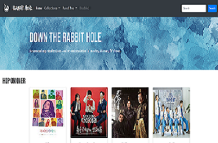

Panel One
Reflection
The process of building Panel One was a mix of enjoyment, accomplishment, and deep frustration. There were various moments when I felt like I had made many accomplishment as the panel began to look the way I had initially imagined it. I also made several changes to my plan as I find my current methods to be complicated, or I was simply unable to find or apply a certain code in a way I would have liked.
I began building the navigation bar using Bootstrap and came back to it every now and then to change various elements as the page continue to develop. I did not really struggle as much on this part of the project. I then began to build the bottom most portion of the page, which was not where I intended it to be at first. However, this part of the page also went by rather smoothly. One of the few struggles that I encountered here was to get all the image in the carousel to be the same size so as to not disturb the rest of the panel when the carousel flips to the next picture. The part I had the most struggle with was the middle section ("Hop On Over") where I had organized the card elements into the bootstrap grid. At first, I struggled getting the content in the p tags to show up, which I later discovered was due to the font being white on top of a white background. I also struggle to get this portion to become responsive when it appears on a smaller screen.
However, I was really proud of how the card elements and the carousel section turn out to be as I believe that it matches very well along with the rest of the page. I also learned how to create a logo to place in the navigation bar and the title bar in the tab. If I had a chance to improve upon this page, I would try learn how to make card elements responsive and also more ways to modify the bootstrap grid
Panel OneReflection
While working on Panel Two, I had struggle a bit as I moved my content from Panel One into Panel Two. At some part of the process, the page would become out of order or different components on the page would not lined up properly. I had to change or remove some of the coding that was already there, which was a partially a trial and error as I tried to figure out the correct line to modify. At the moment, I beleive that the appearance of the page looks great, although I believe that I will be able to improve it immensely in the next part of the project as I apply custom CSS to the page.
Overall, I am really proud of how everything looks cohesive and mesh well with each other.One of the thing I want to improve upon is applying responsive elements to the page as some element of the website is still not fully responsive when viewing on a mobile device, such as the embeded Youtube video.
Panel Two

Reflection
As I customized Panel Three, there were several obstacles that momentarily hindered my progress. I realized that there were many elements that would not change unless I added the "!important" tag to the css. There were also elements that I wasn't sure about how to change, such as the spinner that shows up when the page first load and the carousel indicators as well as the social media icons at the bottom of the page. For the rest of the customization, it was partly trial and error as I tested out different fonts, colors, and arrangement of various items on the page. However, in the featured works section of the page, I did have some difficulties adding an icon from Font Awesome. Sometimes the icon did not show up at all, or it would just show up as a slanted rectangle. I later discovered that I needed to provide a link to a specific file from Font Awesome for the icon to work, which I eventually did link at the beginning of the code.
Previously in Panel Two, the Youtube videos I embeded on the website were not very responsive as the video player did not shrink as the screen size decrease. I was very proud as I learned how to make those videos more responsive through the use of class and css styling (iframe-container-item). I also learned how to add a drop shadow to the text in the home section of the page. At the end of the day, I am really proud of the overall appearance of the page and how well different of components seem to match well with each other. Moving forward, I hope to be able to learn how to change some of the functions/buttons I mentioned earlier (those that I had trouble with) as well as how to make my page as responsive as possible.
Panel Three